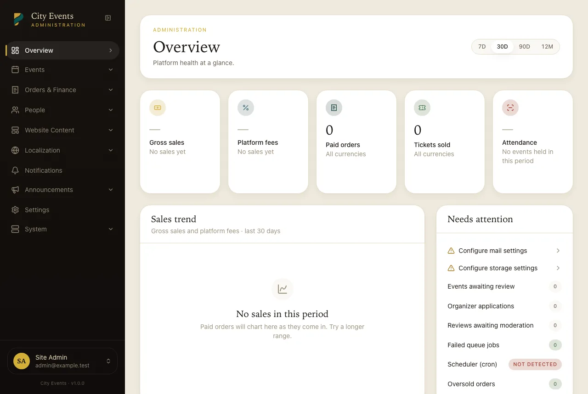

Cron & Queue Workers
One cron line covers everything — Supervisor is optional, not required.
There's exactly one hard requirement: a standard Laravel scheduler cron entry, once a minute.
* * * * * php /path/to/script/artisan schedule:run >> /dev/null 2>&1
What rides on that one line
| Job | Frequency | What it does |
|---|---|---|
orders:release-expired | Every minute | Cancels pending orders past their payment-hold deadline and returns inventory to sale. |
queue:work --stop-when-empty --max-time=50 | Every minute | Keeps the queue moving — ticket PDFs, emails, image conversions, and push notifications are all queued jobs. This is what makes a dedicated worker process optional; it exits immediately once the queue's empty, and it re-runs every minute either way. |
events:send-reminders | Every 15 minutes | Sends 24-hour and 1-hour reminders before an event; safe to run this often, dedup is tracked per-reminder. |
activity-log:prune | Daily | Trims the audit log according to your configured retention period (no-ops if you haven't set one). |
| Cron heartbeat | Every minute | Records a timestamp Admin → System reads to tell you whether cron is actually running. |
If Admin → System shows a stale heartbeat, your cron entry isn't firing — check the exact PHP path/version your host's cron uses (see Troubleshooting the installer for the same PHP-binary-path issue at install time).
Optional: a persistent queue worker (VPS + Supervisor)
On a VPS, you can run a long-lived worker for lower latency on ticket emails/PDFs than waiting for the once-a-minute cron drain. Both can run at the same time safely — see Installing on a VPS for the Supervisor config. On shared hosting without SSH, skip this entirely; the cron-driven drain is what the defaults are built around.
Redis is optional, not required
QUEUE_CONNECTION, CACHE_STORE, and SESSION_DRIVER all
default to database so nothing beyond MySQL is required. If you're on a VPS and want
Redis for throughput, it's a drop-in .env change — nothing in the app assumes one
driver over the other.